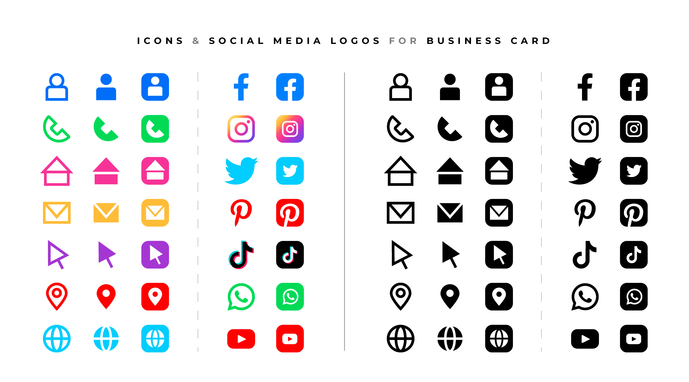

Las redes sociales son plataformas digitales formadas por comunidades de individuos con intereses, actividades o relaciones en común (como amistad, parentesco, trabajo). Las redes sociales permiten el contacto entre personas y funcionan como un medio para comunicarse e intercambiar información. Los individuos no necesariamente se tienen que conocer antes de entrar en contacto a través de una red social, sino que pueden hacerlo a través de ella, y ese es uno de los mayores beneficios de las comunidades virtuales.
Las redes sociales han tenido una difusión global gracias al surgimiento y la expansión de internet, que ha alcanzado a tantas personas en diversos lugares alrededor del mundo. Esto les agrega un gran potencial para usos comerciales, económicos, informativos, de entretenimiento, políticos y para interacciones sociales a distancia.
